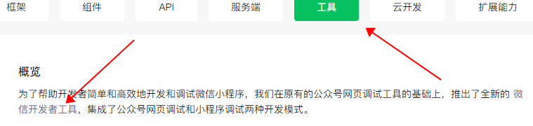
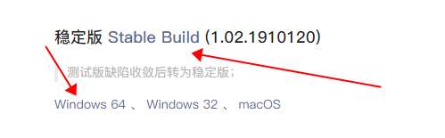
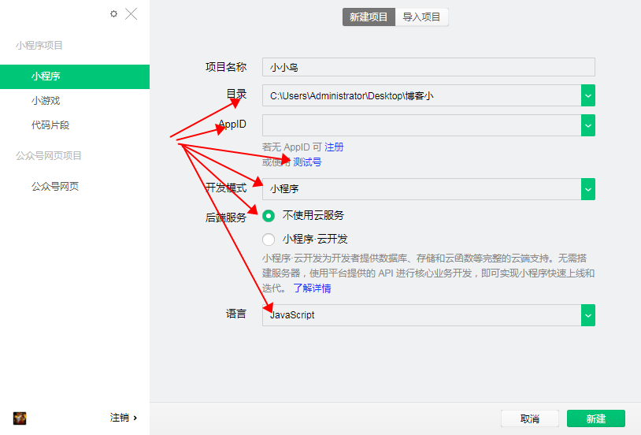
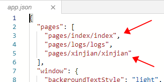

几个入门小知识
1. 微信公众平台下载开发者工具(稳定版/64)
登录微信公众平台


2. 导入本地文件夹 APPID (开发 -> 开发设置（没有APPID可以用测试）) 、 后端服务（不使用云服务） 、 语言（JavaScript）

3. pages:存放页面
每个页面有四部分构成:
js:逻辑层（必须有）
wxml:视图层（必须有）
wxss:样式
json:页面配置
4. 以wx.开头的都是调用微信的api
注：
1. onLoad：加载、页面的入口
2. js中 onShow(进入前台) onHide(进入后台)
3. wxml中 view相当于div 、text 相当于 span 、 block无意义，起包裹作用（wx:for）
4. pages文件夹下文的页面数量与json中的pages字段数组对应，删除pages字段中的某条路径时，文件夹不会自动删除，所以要手动删除对应文件，保证两者是对应关系。
5. 当本页面有配置的时候就采用本页面的配置，没有的时候就采用全局的配置。
6. 使用App()来注册一个小程序，必须在app.js中注册，且不能注册多个，使用Page()注册一个页面，在每个页面的js文件中注册
7. app.json,该文件不能含有任何注释。（.json文件中无法使用注释，添加任意注释都会引发报错）
8. app.json中window为头部导航条的样式（navigationBarBackgroundColor：只能用#形式的颜色、navigationBarTextStyle：只能是black或white）
9. app.json 中第一个为默认打开页面，最后一个没有逗号。
